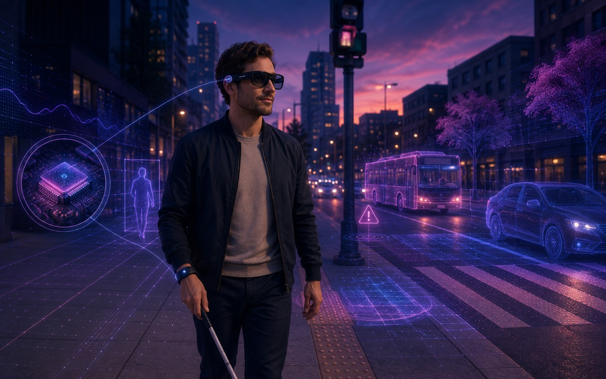

Ongoing
LUMENAA — Edge-Native Assistive Vision Agent
An edge-native, agentic multimodal vision agent for visually impaired users: a planner/router with tool use and vector memory orchestrates multi-LLM/VLM reasoning (Mistral, OpenRouter) with RAG-style retrieval, a structured evaluation harness, and anti-fabrication guardrails — running perception on-device and escalating to the cloud only when needed.
0Cloud-Call Reduction
Agentic AIMultimodalRAG